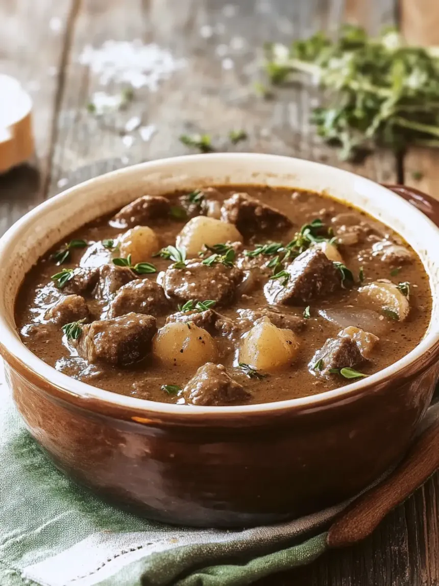

Flemish beef stew

Flemish beef stew, known in Dutch as stoofvlees or stoverij and in French as carbonade flamande,
is a traditional Belgian dish characterized by its sweet-sour flavor profile.
Ingredients:
- Beef (Chopped in 4 cm chunks)
- Onion (roughly diced)
- Bread
- Mustard
- Butter (unsalted)
- Flour
- A bottle of brown beer
- Beef stock
- Red current jelly or brown sugar
- Nutmeg
- Bae leaves
- A sprig fresh thyme and rosemary
- salt and pepper
Recipe:
- Melt 1 tablespoon of butter in a large cast iron type of pan, saute the onions till soft, remove and reserve.
-
Add 1 tablespoon of butter to the pan, season the meat with salt and pepper and sear over medium heat the beef a few chunks at time.
Don't crowd the beef or you will not be able to get an even searing on all sides.
Dust with flour from time to time when turning the meat over and continue searing. remove the meat and reserve with the onions.
-
Add the beer to the pan and turn up the heat, bring to a boil. Scrape the brown bits from the bottom of the casserole.
Add the beef and onions back in along with the red currant jelly, nutmeg, bay leaves and thyme.
Make sure the beef is fully submerged, add beef stock if needed. Stir and bring to a simmer.
-
Simmer the stew covered with the lid for 1,5 hour, stirring every 30 minutes.
Then remove the lid and simmer for another 30 minutes till the sauce has thickened, remove from the heat.
-
The stew can be served immediately with fries or boiled potatoes.
However the stew flavours build up even more if you can tolerate letting it stand with lid on for 12 hours. It's hard to resist but it will be worth it.
Home